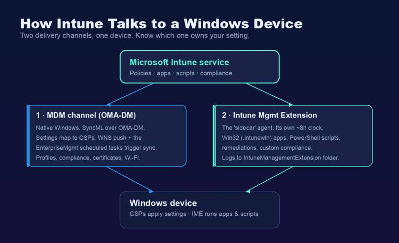
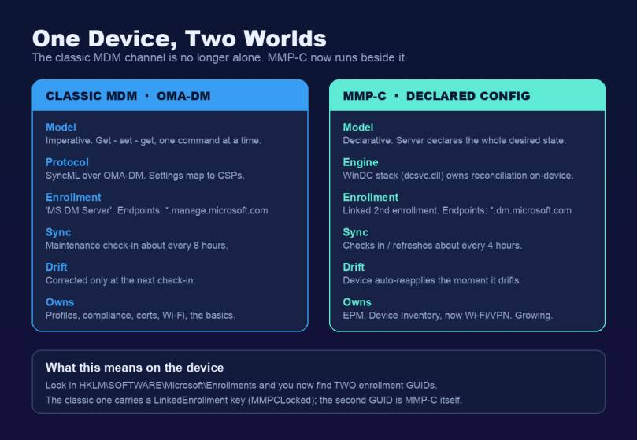
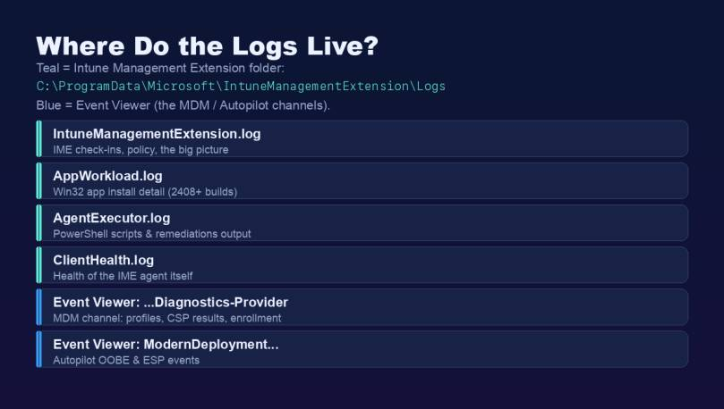
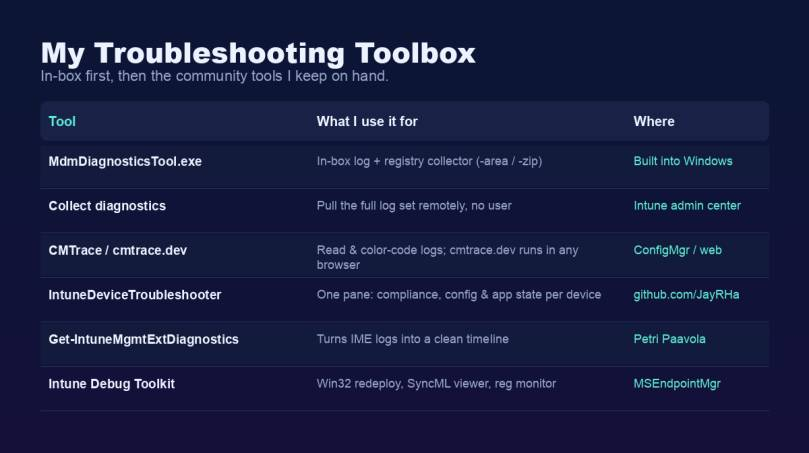
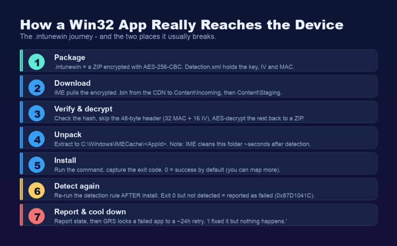
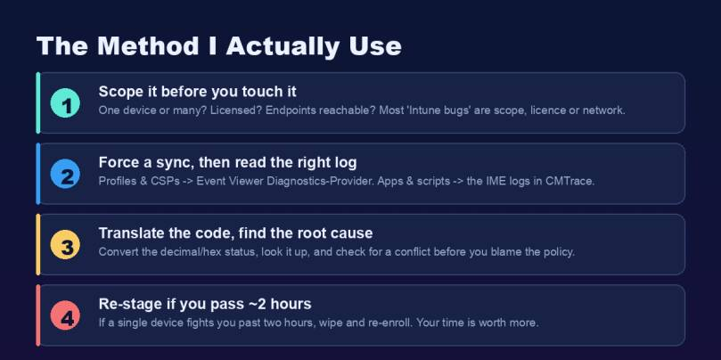
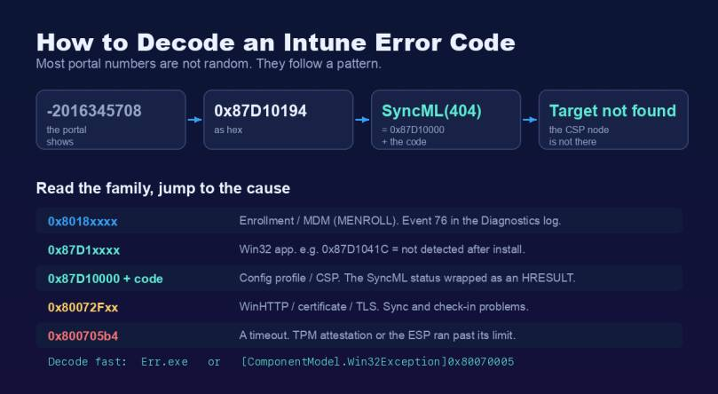

In this blog post I explain how I approach Intune troubleshooting from end to end. This is not a list of error codes you can already find in the docs — it is the full picture: how Intune actually works under the hood, how a device proves who it is, where the logs live, which tools I reach for, and a clear method I follow every time. When you understand how a device talks to Intune, most problems stop being a mystery. You stop guessing and you start reading the right log, which is what real Intune troubleshooting is about.
This is a long one, on purpose. I wanted the single Intune troubleshooting guide I can send to a colleague and say “read this and you can fix most things yourself.” So we go all the way down — including the new MMP-C and Declared Configuration plumbing that almost no admin knows is already running on their devices — and then back up to the errors you hit most.
A note on honesty before we start: a lot of the deepest details here are not in the official Microsoft docs. They were reverse-engineered by people like Rudy Ooms, Oliver Kieselbach and Michael Niehaus. I will say clearly when something is community knowledge rather than documented, because internals like this change between Windows builds. Let us start with the part most guides skip — the mental model.
Intune troubleshooting starts here: how Intune actually works under the hood
Before you troubleshoot anything, you need to know who delivers what. Almost every Intune troubleshooting session that goes wrong goes wrong here: on Windows there are two separate channels that have almost nothing to do with each other, and most confusion I see comes from people not knowing which channel owns their setting.

Channel 1 — the native MDM channel. This is built into Windows. Intune talks to the device using the OMA-DM protocol, and the messages are SyncML (XML). The device does not get raw registry keys. Instead, every setting maps to a Configuration Service Provider (CSP) — a small interface in Windows that knows how to apply that one setting. Profiles, compliance, certificates and Wi-Fi all come down this channel.
Channel 2 — the Intune Management Extension (IME). This is a real agent (the old name was the “Sidecar” agent). It is installed automatically the first time you assign a Win32 app, a PowerShell script, a remediation or a custom compliance script. It does the things the native MDM channel cannot. It has its own service (IntuneManagementExtension) and its own clock, independent from the MDM check-in.
Note: This is the single most useful Intune troubleshooting habit to internalise. If a configuration profile is broken, you look at the MDM channel and Event Viewer. If a Win32 app or a script is broken, you look at the IME and its logs. Two problems, two places.
How do CSPs really work?
This is worth understanding properly, because it explains the error codes later and makes Intune troubleshooting far less guesswork. A CSP is the bridge between the SyncML command Intune sends and the actual Windows setting. The command targets an OMA-URI (also called a LocURI) — a path like:
For Intune troubleshooting, the very first part decides the scope: ./Device for a device setting, ./User for a user setting. If there is no prefix, Windows treats it as device-targeted by default.
The Policy CSP is the workhorse for most settings, and it has one detail that helps enormously when troubleshooting: it has a Config path (read/write — where Intune sets the value) and a Result path (read-only — where you read the conflict-resolved value the device actually applied). So when two sources fight over a setting, the Result path tells you who won.
When Intune sends a Settings Catalog profile, each setting becomes a SyncML command — usually a Replace (set a value), an Add (create a node) or a Delete (remove it). “Not configured” is literally a Delete. Microsoft recommends wrapping each setting in an Atomic block so it is applied as a single transaction. The on-the-wire command looks like this:
Hint: You can watch these commands live with Oliver Kieselbach’s SyncML Viewer. It traces the MDM session and shows you the exact XML the client sent and received. It is the fastest way to prove whether a setting was actually delivered or silently dropped.
How often does a device check in?
Microsoft states the maintenance check-in happens about every 8 hours, and the IME also checks in on its own schedule. But you rarely wait that long. When you assign something or hit Sync, Intune sends a Windows Push Notification Service (WNS) notification that triggers a near-immediate check-in. So the famous “8-hour sync” is misleading — targeted changes push almost right away, which is the first thing I confirm in any Intune troubleshooting case before I assume something is broken.
For Intune troubleshooting, the trigger on the device is a set of scheduled tasks created at enrollment under Task Scheduler Library > Microsoft > Windows > EnterpriseMgmt > {EnrollmentGUID}. The key one is PushLaunch, which reacts to the WNS push and starts an OMA-DM session.
Hint: A LastTaskResult of 0x82AC0204 on the PushLaunch task is not an error. It just means “queued, will run later.” I have seen people chase that for an hour.
MMP-C and Declared Configuration: the second brain Intune troubleshooting now has to cover
Here is the part that surprises most admins, and increasingly trips up Intune troubleshooting: on a modern, fully patched Windows device, there is now a second enrollment running quietly next to the classic one. If you have not heard of MMP-C yet, you will — it is already on your devices.

MMP-C stands for Microsoft Management Platform – Cloud. It is a new cloud management plane that runs alongside — not instead of — the classic Intune/OMA-DM channel. It exists to carry Windows Declared Configuration (WinDC), a new way of delivering policy.
The difference between the two models is the whole point:
- The classic OMA-DM channel is imperative. The server issues commands one at a time — get, set, get — and only checks the result at the next sync. If the setting drifts in between, nothing happens until the device checks in again.
- Declared Configuration is declarative and idempotent (think Windows DSC). The server sends the whole desired state in one batch per scenario, the client validates it synchronously, and the device itself owns keeping it that way. If a setting drifts, the device re-applies it on its own — non-destructively. This is the same desired-state idea Apple uses for declarative device management.
Microsoft says plainly that WinDC requires a separate OMA-DM enrollment that depends on the device already being enrolled in a primary MDM server. So a managed device now has two enrollments: the classic one (the “MS DM Server”, using *.manage.microsoft.com) and a linked second one for Declared Configuration (using the *.dm.microsoft.com endpoints).
What triggers it, and what runs on it?
The linked enrollment first showed up with Endpoint Privilege Management (EPM), which is still the flagship workload. But the big change is Windows Advanced Device Inventory (the Properties Catalog) — because that feature runs on MMP-C, the dual enrollment is now rolling out to effectively all managed devices, without you doing anything. Resource access policies (Wi-Fi, VPN and certificates) are moving over too.
Microsoft has signalled that security baselines, Defender settings and Account Protection are on the same pipeline — but as of writing none of those are confirmed generally available on the Declared Configuration channel, so I treat them as “coming, not here.” That distinction matters for Intune troubleshooting: if a baseline misbehaves today, it is still travelling down the classic OMA-DM channel, not WinDC. This is the direction of travel for Windows management, but read the channel before you read the log.
Note: The acronym, the enrollment “type” numbers, the *.dm.microsoft.com host names and the 4-hour cadence below were reverse-engineered by Rudy Ooms (call4cloud), not published by Microsoft. The desired-state model, the dedicated enrollment requirement and the refresh interval are documented. I am separating the two so you know what to trust.
How does it work, and how do I see it on a device?
The second enrollment is set up through new LinkedEnrollment nodes on the DMClient CSP — you set a DiscoveryEndpoint, then Exec an Enroll. On the device the linked OMA-DM enrollment is named MicrosoftManagementPlatformCloud, so that string in the registry or in a log is your confirmation that MMP-C is live. The engine that processes Declared Configuration documents runs as the Windows service dcsvc (backed by dcsvc.dll), and a scheduled task runs deviceenroller.exe /DeclaredConfigurationRefresh to reconcile drift — by default about every 4 hours (the classic MDM channel is every 8). The refresh interval is configurable via DeclaredConfiguration/ManagementServiceConfiguration/RefreshInterval. So MMP-C is not only a different model, it also checks in twice as often.
The first Intune troubleshooting step for MMP-C is to confirm it on a device by opening the registry:
You will now see two enrollment GUIDs. Under the classic Intune enrollment there is a LinkedEnrollment subkey with values like EnrollStatus, LastError and MMPCLocked. The second GUID is the MMP-C enrollment itself, with its own folder under EnterpriseMgmt in Task Scheduler.
Hint: Declared Configuration does not get its own Event Viewer log. Its events ride inside the normal DeviceManagement-Enterprise-Diagnostics-Provider channels — look for lines that say MDM Declared Configuration: or Provider Name: (DeclaredConfiguration). I will come back to the MMP-C errors I see most later in the guide.
Identity and Intune troubleshooting: how a device proves who it is
A huge share of “Intune is broken” tickets are really identity problems, so identity is where a lot of Intune troubleshooting actually ends — the device cannot prove who it is, so sync, enrollment or Conditional Access fails. So it is worth understanding the identity layer. Your first command, always, is:
Read three sections (Microsoft documents every field in the dsregcmd troubleshooting reference):
- Device State — the first thing I check in identity Intune troubleshooting:
AzureAdJoined,DomainJoined,EnterpriseJoined. The combination tells you the join type.AzureAdJoined: YESalone is cloud-native (Entra joined);YES+DomainJoined: YESis hybrid. (Entra registered shows up lower, asWorkplaceJoinedin the User State.) - Device Details — the device certificate thumbprint, and
TpmProtected: YES(the private key lives in the TPM). - SSO State —
AzureAdPrt: YES/NO,AzureAdPrtUpdateTime(if it is more than ~4 hours old, the PRT is failing to refresh) andAcquirePrtDiagnostics. This is the Primary Refresh Token, and it matters more than people think. Tip: locking and unlocking the device forces a PRT refresh attempt — one of the fastest Intune troubleshooting moves there is.
The two certificates you must not confuse
A managed, Entra-joined device has two certificates that do very different jobs, and mixing them up wastes hours:
- MS-Organization-Access — this is the device identity for Entra. It is issued when the device registers, lasts about 10 years, and its presence is the Azure AD join. This certificate is what gets the device a PRT. Remove it and the device is effectively unjoined.
- Microsoft Intune MDM Device CA — this authenticates the OMA-DM management channel to Intune. This is the certificate that breaks when sync dies with
0x80190190.
They fail independently, and confusing the two is one of the most common Intune troubleshooting mistakes. A device can be perfectly Entra-joined with a healthy PRT and still have an expired MDM certificate that blocks all sync. (The pairing of these two certs and their OID details is documented best by Rudy Ooms; the Entra device-identity half is also in Microsoft’s own device FAQ.)
What is the PRT, and why does it break things?
The Primary Refresh Token (PRT) is the key artifact behind single sign-on, and a recurring root cause in Intune troubleshooting. Microsoft describes it as an opaque blob issued to the token brokers on the device. The important part for troubleshooting is how it is protected:
- At registration the device generates a device key and a transport key, both bound to the TPM.
- Entra issues the PRT plus a session key that is encrypted to the transport key — so only that device’s TPM can decrypt it. That session key is then used to sign every later token request.
- CloudAP (the Cloud Authentication Provider, loaded into LSASS) caches and renews the PRT every 4 hours. That is exactly what
AzureAdPrtUpdateTimereflects.
So when the TPM has a problem, or the device object is deleted or disabled, the PRT cannot refresh — and because device-compliance claims for Conditional Access ride inside the PRT, a broken PRT can cascade into sign-in prompts, CA blocks and sync failures all at once. To dig in, read the SSO State in dsregcmd /status, then Event Viewer under Microsoft > Windows > AAD > Operational (the PRT flow is bracketed by event 1006 start and 1007 end).
Note: Microsoft says explicitly not to use Fiddler to capture PRT traffic — use netsh trace instead. Fiddler is great for the OMA-DM channel (more on that below), but it breaks the PRT flow.
Where the logs live: the Intune troubleshooting log map
Once you know the channels and the identity layer, the log locations make sense. Here is the map I keep in my head.

Before the long-form notes, here is the quick reference I keep pinned. When someone asks “where are Intune logs stored on Windows?”, this table is the answer. Everything for apps and scripts lives under C:\\ProgramData\\Microsoft\\IntuneManagementExtension\\Logs\\ and is best read with CMTrace.
| Log file | What it is for |
|---|---|
IntuneManagementExtension.log | Main IME log: check-ins, policy requests, processing and reporting — the big picture. |
AppWorkload.log | Win32 app deployment and install detail (primary log for Win32 apps on current builds). |
AppActionProcessor.log | Detection and applicability (requirement) checks. |
AgentExecutor.log | PowerShell platform-script and remediation execution, with the output. |
HealthScripts.log | Remediations (proactive remediation) run detail. |
Win32AppInventory.log | Win32 app inventory collector. |
Sensor.log | Endpoint Analytics data collector. |
ClientHealth.log | Health of the IME agent itself. |
For apps and scripts (the IME): everything is in
C:\ProgramData\Microsoft\IntuneManagementExtension\Logs.
- IntuneManagementExtension.log — the main log. IME check-ins, policy requests, the big picture.
- AppWorkload.log — Win32 app install detail. On newer builds (service release 2408 and later) this is where the real app detail moved, so check both this and the main log.
- AgentExecutor.log — the actual PowerShell script and remediation execution, with the output.
- ClientHealth.log — the health of the IME agent itself.
For profiles, CSPs and enrollment (the MDM channel): open Event Viewer and go to
Applications and Services Logs > Microsoft > Windows > DeviceManagement-Enterprise-Diagnostics-Provider > Admin.
Turn on the Debug channel (View > Show Analytic and Debug Logs) when you need more detail. Some event IDs worth knowing here:
- 75 = enrollment success, 76 = enrollment failure (with the
0x8018xxxxcode). - 208 / 813 / 814 = OMA-DM session and policy applied.
- 809 = a policy failed with an “Unknown Win32 error code” — a frequent Intune troubleshooting clue — the line usually prints the decoded error right there.
For Autopilot: Applications and Services Logs > Microsoft > Windows > ModernDeployment-Diagnostics-Provider > Autopilot.
How do I read an IME log like an expert?
Reading IntuneManagementExtension.log raw is painful — it is full of GUIDs, and that friction is where a lot of Intune troubleshooting stalls. Here is how the people who do this all day actually work:
- Turn GUIDs into names first. Use Petri Paavola’s Get-IntuneManagementExtensionDiagnostics with
-ConvertAllKnownGuidsToClearText. It turns the log into a readable timeline of every app, script and ESP phase, with the GUIDs replaced by real names. It honestly makes the log a thousand times easier to read. - Know the lifecycle markers to search for. For Win32 apps, grep for
[Win32App], and especiallyGRSManagerandReevaluationScheduleManager— those tell you about the retry cooldown (more on that below). A line saying an app “is not expired” means it is still in its cooldown window. - Open it in a proper viewer. Use CMTrace or, on any machine without ConfigMgr, cmtrace.dev — the free browser version Florian Salzmann and I built. It colours errors red, follows the file live, and has a built-in error-code lookup.
Hint: With verbose IME logging enabled, the log even contains the download URL, AES key and IV needed to decrypt the .intunewin package — Oliver Kieselbach documented this. Useful, but it writes secrets to disk, so turn verbose logging back off and clean up afterwards.
The Intune troubleshooting tools I use
I always start my Intune troubleshooting with what is already on the device or in the portal, and only then reach for community tools. Here is my toolbox.

MdmDiagnosticsTool.exe — the in-box collector
This ships with Windows and is my go-to first-line Intune troubleshooting collector. It gathers the logs, registry exports and event logs into one package, plus an HTML summary:
Save the output to a folder you can write to (like C:\Temp). This is also what the portal’s Collect diagnostics action runs under the hood.
Collect diagnostics — the same thing, remotely
For remote Intune troubleshooting, open a Windows device in the admin center and click Collect diagnostics. It pulls the full log set without bothering the user, and you can run it on up to 25 devices at once. The collection stays for 28 days. This is my first move when the device is not in front of me.
The community tools I keep on hand
- IntuneDeviceTroubleshooter — a tool I built. It pulls a device’s compliance, configuration and app state from Microsoft Graph into a single pane, so you do not have to click through five blades to see why a device is unhappy. It also does one-click actions like sync and restart.
- Error Hunter — my free MSNugget lookup for Intune and Windows error codes: 350+ codes with meaning, cause, fix and a Microsoft Learn link, all client-side.
- Get-IntuneManagementExtensionDiagnostics by Petri Paavola — the IME log timeline tool I mentioned above. Essential.
- Intune Debug Toolkit from MSEndpointMgr — a Windows GUI with a Win32 app redeploy button, a SyncML viewer, a registry change monitor and bundled CMTrace. Many of us in the community contributed to it.
- SyncML Viewer by Oliver Kieselbach — live OMA-DM protocol tracing, and newer versions can even trigger an MMP-C sync and decode an Autopilot hardware hash.
- For Autopilot specifically:
Get-AutopilotDiagnostics(Michael Niehaus) builds a clean OOBE/ESP timeline, andOA3Tool.exefrom the Windows ADK decodes a hardware hash (it is not a hash at all — it is a base64 list of hardware attributes).
Hint: For quick, focused tips I also write short “nuggets” with Florian over at MSNugget, and the people who taught me most of the internals in this post are worth following directly: Rudy Ooms, Oliver Kieselbach and Michael Niehaus.
How does a Win32 app really reach the device?
Win32 apps cause more Intune troubleshooting than anything else, so it pays to know exactly what happens. Here is the full journey of an .intunewin file. If you want even more on the agent that drives this, I wrote a separate deep dive: Intune Management Extension Deep Dive: How IME Works.

The .intunewin is just a ZIP that has been encrypted. The Content Prep Tool encrypts your payload with AES-256 in CBC mode, and stores the keys in Detection.xml inside the package (the EncryptionKey, the MacKey, the InitializationVector and a MAC). The encrypted .bin has a fixed layout: the first 32 bytes are an HMAC, the next 16 bytes are the IV, and the rest is the ciphertext — so a decoder literally skips the first 48 bytes before decrypting. Oliver Kieselbach and Stephan van Rooij reverse-engineered all of this; Microsoft only documents that it is encrypted, not how.
Note: The keys are not shipped to the client inside the package — the IME receives them from the Intune service by policy when it requests the app. That is why you cannot just unzip a .intunewin and read it.
For Intune troubleshooting, this is the chain to picture: on the device the IME downloads the .bin to Content\Incoming, verifies the hash, decrypts it, and unpacks the result to C:\Windows\IMECache\<AppId>. Then it runs your install command and captures the exit code. After the install, it re-runs the detection rule to confirm the app is there.
This is where the two classic failures live — and Microsoft’s app install error codes reference is the canonical list to keep alongside this section:
- “Installed but reported as failed” (
0x87D1041C) — the installer returned success, but the detection rule did not find the app afterwards. Almost always the detection rule is wrong: wrong path, wrong version, wrong registry value, or a mismatched MSI product code. - The IME cleans the
IMECachefolder a few seconds after detection. If your installer is a wrapper that calls files from that folder after the detection result, it fails with a “source not found” error. Fix it by zipping all your files and expanding them yourself first.
The retry trap: GRS
Here is the one that catches everyone. After a failed install, the IME does not keep trying every check-in. It retries a failed app three times at five-minute intervals, then locks it into the Global Retry Schedule (GRS) — a roughly 24-hour cooldown during which it skips the app on every sync. So when you fix the detection rule and nothing happens, the app is not broken — it is just in its cooldown. Knowing this single fact prevents more wasted Intune troubleshooting time than almost anything else in this guide.
To force an immediate retry on a test device, you clear the IME’s state and restart the service:
Note: The app state lives under HKLM\SOFTWARE\Microsoft\IntuneManagementExtension\Win32Apps\<SID>\<AppGUID> — the SID is S-0-0-00... for a device-targeted app, or the real user SID for a user-targeted one. The retry cooldown itself is a separate GRS hash key under ...\Win32Apps\<SID>\GRS\<hash>. To properly clear the cooldown you delete both the <AppGUID> key and its matching GRS\<hash> key, then restart the IntuneManagementExtension service — which is why I just clear the whole Win32Apps branch in the script above and restart. GRS is community-documented (Rudy Ooms, MSEndpointMgr) and the exact layout shifts between versions, so do this on a test device, not in production. And remember: clearing GRS only resets the retry timer — it does not fix the underlying failure.
Win32 app return codes you must map correctly
The detection rule is the source of truth for “installed or failed,” but the installer’s exit code still has to be mapped correctly in the app’s return-code list, or a perfectly good install gets reported as a failure. This is the table I check whenever a Win32 app result looks wrong. Any code that is not in the return-code list is treated as Failed — the classic trap is a 3010 soft reboot that nobody mapped as success.
| Return code | Meaning in Intune |
|---|---|
0 | Success. |
1707 | Success (legacy installer success code). |
3010 | Soft reboot — success, reboot is batched (deferred until after the ESP). Must be mapped as success. |
1641 | Hard reboot — success, the IME reboots the device immediately. |
1618 | Retry — another installation is already running (TrustedInstaller is busy); the IME tries again later. |
The method I actually use
Tools are not a method. Here is the Intune troubleshooting order I follow, every time. It keeps me from rabbit-holing.

- Scope it before you touch it. Good Intune troubleshooting starts here: is it one device or many? Is the user licensed? Are the required network endpoints reachable? In my experience most “Intune bugs” are not bugs at all — they are scope, licence or network. This is also the approach the team at OceanLeaf describe in their troubleshooting guide, and I agree with it.
- Force a sync, then read the right log. Most Intune troubleshooting lives in this step: profiles and CSPs go to Event Viewer (Diagnostics-Provider). Apps and scripts go to the IME logs in CMTrace. Do not read the app log for a profile problem.
- Translate the code, find the root cause. Convert the status code, look it up, and check for a conflict before you blame the policy. Two profiles fighting over the same setting is one of the most common causes.
- Re-stage if you pass about two hours. If a single device keeps fighting you past two hours, wipe and re-enroll it. Your time is worth more than one stubborn machine. (For a fleet-wide problem you keep digging — re-staging only makes sense for a single device.)
The Intune troubleshooting errors I hit most — and how I fix them
Now the practical part. These are the categories that fill my week, and the bulk of day-to-day Intune troubleshooting.
Before the category-by-category notes, here is the fast lookup. These are the codes that come up most in real Intune troubleshooting, grouped by where they fire, with the fix I reach for first.
| Code | Meaning | First fix |
|---|---|---|
0x80180014 | MDM enrollment blocked by an enrollment restriction. | Allow Windows (MDM) under Devices > Enrollment; check the device cap. |
0x8018000a | Device is already enrolled in another MDM. | Clear the stale enrollment and its EnterpriseMgmt scheduled tasks, then re-enroll. |
0x80180018 | No or invalid licence. | Assign an Intune licence; confirm the user is in MDM user scope. |
0x8018002b | Unverified / non-routable UPN suffix, or user out of MDM scope. | Fix the UPN suffix; set MDM user scope to All or the right group. |
0x801c03ea | TPM attestation failed (Autopilot self-deploying / pre-provisioning). | Update TPM firmware; tpmtool getdeviceinformation; confirm physical TPM 2.0. |
0x801c0003 | Entra join not authorized. | Allow device join; check the device quota. |
0x80070774 | Hybrid join: domain mismatch / DC unreachable. | Unassign user on the Autopilot profile; check the ODJ Connector (30120/30130/30140). |
0x87d1041c | Win32 app installed but detection rule did not find it. | Fix the detection rule (path, version, MSI ProductCode); remember GRS cooldown. |
0x87d1fde8 | Generic IME install failure / will retry. | Fix detection, test the install as SYSTEM, check AppWorkload.log. |
0x80190190 | Sync fails — expired Intune MDM Device CA certificate. | Check the cert in certlm.msc directly; re-enroll if expired. |
Enrollment fails
For enrollment Intune troubleshooting, look first in Event Viewer at the Diagnostics-Provider log and at the EnterpriseMgmt scheduled task result (Event ID 76). The codes I see most:
- 0x8018002b — the classic. Usually the user’s UPN uses a domain that is not verified or not routable (like
.local), or the MDM user scope in Entra is not set to include the user. Fix the UPN suffix, and set Entra > Mobility (MDM and MAM) > Microsoft Intune > MDM user scope to All or the right group. - 0x80180014 — Windows (MDM) enrollment is blocked by an enrollment restriction. Devices > Enrollment > set Windows (MDM) to Allow.
- DeviceCapReached — the user hit the device enrollment limit. Remove stale device records or raise the limit.
- 0x8007064c / 0x8018000a — the device is already enrolled (often a cloned image or a leftover work account). Remove the old connection or clean the stale enrollment certificate, then re-enroll.
Rudy Ooms has a deep write-up of these enrollment codes at call4cloud if you want the registry-level internals.
A Win32 app says “installed” but shows as failed
This is the 0x87D1041C / GRS situation I covered in the journey section above — open AppWorkload.log, confirm the install succeeded and the detection failed, fix the detection rule, and remember the cooldown.
A configuration profile shows “Error”
In profile Intune troubleshooting, errors show up as a long decimal status code in the portal. They are SyncML statuses with an underlying Win32 code. The pattern:
- A SyncML(404)-style code means the CSP node was not found or is not applicable to that platform.
- A SyncML(405) means you wrote to a read-only node, and 418 means the node already exists.
- A SyncML(500) on the firewall compliance setting is very often benign and transient — the MDM agent starts before the firewall service finishes initialising at boot. It clears on the next sync.
Before you change anything, check the Conflict state — two profiles setting the same value differently is the cause more often than people think.
How do I decode an error code fast?
Most of these numbers are not random — and decoding them is core Intune troubleshooting. They follow a pattern, and once you see it you can decode the portal’s cryptic decimals in your head.

For configuration profiles, the rule is 0x87D10000 + the SyncML status code. So a portal value of -2016345708 is 0x87D10194 in hex, which is 0x87D10000 + 0x194 — and 0x194 is 404. The setting failed because the CSP node was not found. That is a real example from the Intune portal.
It also helps Intune troubleshooting to read the family of a code and jump straight to the area:
- 0x8018xxxx — enrollment / MDM (the MENROLL family). Look at Event 76.
- 0x87D1xxxx — a Win32 app (e.g.
0x87D1041C, not detected after install). - 0x80072Fxx — WinHTTP / certificate / TLS. Sync and check-in problems.
- 0x800705b4 — a timeout, usually TPM attestation or the ESP running past its limit.
To get the plain-English text of any Win32 code fast, use Microsoft’s Err.exe, or in PowerShell:
Hint: Even faster, paste the code straight into ErrorHunter — a free error-code lookup Florian and I built that translates Win32, HRESULT and MDM/SyncML codes into plain English in the browser. It is the one I keep open in a tab while reading logs.
A device is non-compliant for no obvious reason
In compliance Intune troubleshooting, a few things bite here:
- Every compliance policy has a built-in “Mark device noncompliant” action set to 0 days. Fail one setting and the device is non-compliant immediately. Add a grace period.
- The tenant setting “Mark devices with no compliance policy assigned as” — if this is Not compliant and a Conditional Access policy requires compliance, a device with simply no policy targeted gets locked out.
- A device that has not checked in for ~30 days drifts to non-compliant — the classic “back from holiday” case.
Watch out for the Conditional Access compliance loop: a device is blocked for being non-compliant, but because it is blocked it cannot reach the service to sync and report itself compliant — so it stays blocked. The fix is to target compliance policies to devices (so compliance can be evaluated before the user signs in), and to use offline-licensed Store apps.
Autopilot or the Enrollment Status Page hangs
Autopilot and ESP Intune troubleshooting starts with the three phases: Device preparation (TPM attestation, MDM enrollment, the IME gets installed), Device setup (device-context apps, policies, certs) and Account setup (user sign-in and user-context apps). Press Shift+F10 during OOBE for a command prompt and collect logs there.
How ESP knows what to wait for is worth understanding: the DMClient CSP sends the device a set of Expected lists (expected apps, policies, certificates), and ESP blocks until each one reports back. Michael Niehaus found — and Microsoft’s own docs now confirm — that the “security policies” step does not track real policies at all; it tracks a single dummy entry called EntDMID. So if that step looks odd, that is by design.
The errors I see most:
- 0x800705b4 — a timeout. Either TPM attestation cannot complete (a virtual TPM or TPM 1.2 does not meet the requirements for self-deploying or pre-provisioning — you need a physical TPM 2.0), or the ESP simply ran past its time-out because too many or too-large apps were installing. The TPM attestation chain reaches out to the manufacturer’s EK certificate service and then Microsoft’s attestation service at
*.microsoftaik.azure.net; if a proxy inspects and breaks that traffic, attestation fails. Raise the time-out, reduce required apps, confirm TPM 2.0, and exempt those URLs from inspection. - 0x80070774 — almost always hybrid Entra join with the “Assign user” option set on the Autopilot profile. Unassign the user. Also check the ODJ Connector log on the connector server for the event flow 30120 → 30130 → 30140; if the blob never arrives, the device times out.
- Stuck on “Identifying” — Intune is still computing ESP policies. It never finishes if the user has no Intune licence.
- “Another installation is in progress” — you mixed a line-of-business MSI app and a Win32 app, and both use TrustedInstaller, which cannot run two installs at once. Do not mix them, or move to Autopilot device preparation.
Hybrid Entra join is genuinely fragile, and it is worth knowing why before you promise it: the join is asynchronous and happens in the background, the device has to reach a domain controller twice, the on-prem-to-cloud device sync can take half an hour or more, and if the user signs in before that sync finishes they have no Entra user token yet — so the user phase of ESP breaks. Microsoft and Michael Niehaus both now recommend against deploying new devices as hybrid where you can avoid it. Rudy Ooms’ Autopilot pre-provisioning deep dive is the best read on what happens behind that progress bar.
A device stops syncing
This is bread-and-butter Intune troubleshooting: if a device has not checked in for over a day, it cannot get policy. Force a sync from Settings > Accounts > Access work or school > Info > Sync, or from the device blade in the portal.
The root cause I have been burned by: the dmwappushservice (“Device Management WAP Push Message Routing Service”) is disabled. This service orchestrates the MDM sync sessions. If a hardening baseline disabled it before enrollment, the PushLaunch and PushRenewal scheduled tasks are never created and the device silently stops syncing — with no error logged. Set the service to Automatic (Delayed Start), start it, and re-trigger enrollment. Call4Cloud documents this failure mode in detail here.
If sync fails with a certificate error like 0x80190190, that is the Intune MDM Device CA certificate (from the identity section earlier), not the Entra device cert. The “Last check-in” time can look recent while the certificate is already expired, so verify the certificate in the store directly rather than trusting the timestamp.
A PowerShell script or remediation does not run
For script Intune troubleshooting, open AgentExecutor.log. The facts that explain most “it did not run” cases:
- Platform scripts run once — only on first assignment or when the script changes. They do not re-run every sign-in.
- Scripts run only on Entra-joined or hybrid-joined devices, not on Workplace-Registered ones.
- A badly wrong system clock silently blocks execution.
- The big one: by default scripts run in a 32-bit PowerShell host. The IME agent itself is a 32-bit process (it lives under
Program Files (x86)), so on 64-bit Windows yourHKLM\SOFTWARE\...writes land inWOW6432Nodeand 64-bit paths get redirected. Either set “Run script in 64-bit PowerShell host” = Yes, or call%SystemRoot%\Sysnative\WindowsPowerShell\v1.0\powershell.exefrom inside the script. OnlySysnativereaches the true System32 from a 32-bit process.
Hint: There is a nasty org-wide failure worth knowing: the Entra service principal the IME authenticates against — “Microsoft Intune Windows Agent” — can get continuously disabled, and when it is, all user-targeted scripts and apps stop working. Re-enabling it often does not stick; Microsoft’s current fix is to delete the service principal via Graph so Entra recreates a clean one.
MMP-C or Declared Configuration is not working
Now that you know MMP-C exists, here is how to approach Intune troubleshooting for it. First confirm the second enrollment is actually there: look for the second GUID under HKLM\SOFTWARE\Microsoft\Enrollments and a populated LinkedEnrollment\EnrollStatus with MMPCLocked under the primary enrollment. If EPM is working and its agent installed within minutes, MMP-C enrolled fine.
The problems Rudy Ooms has documented:
- The second enrollment never starts — almost always because the
DiscoveryEndpointwas never set, so theEnrollruns with nothing to point at and you see0x80070002(file not found) and no dual-enrollment scheduled task is ever created. 400 Invalid Request— the tenant is not onboarded to MMP-C.- EPM fails with
2147749902— a Device Health Monitoring policy failed (often a pre-October-2022 Windows build or missing DeviceHealthMonitoring registry keys), which blocks the whole thing. - A Declared Configuration document fails to apply — in the Diagnostics-Provider log you will see a
MDM Declared Configuration:line with a result like0x8000FFFF(a document-ID mismatch) or0x86000002(a typo in the OMA-URI inside the document) and the scenario name (for exampleMSFTVPN).
Note: All the MMP-C error specifics above are from call4cloud’s reverse-engineering, not Microsoft documentation. This area is changing fast, so verify against your build before acting widely.
Intune troubleshooting pitfalls I now avoid
- Reading the wrong log. The most common Intune troubleshooting mistake there is — a profile problem is never in the app log. Pick the channel first.
- Confusing the two certificates. MS-Organization-Access is the Entra identity; the Intune MDM Device CA is the management channel. They fail independently.
- Trusting “Last check-in.” It can look healthy while a certificate has already expired. Verify the certificate, not the timestamp.
- Fixing a Win32 app and expecting an instant retry. The GRS cooldown means nothing happens until the window passes. Clear the state on a test device or just wait.
- Forgetting the 32-bit context. This one cost me hours early on. Always ask which architecture the script ran in.
- Disabling services with a hardening baseline without checking.
dmwappushserviceis the famous victim. Hardening that breaks management is not hardening. - Forgetting MMP-C exists. When EPM, Device Inventory or Wi-Fi/VPN policies misbehave, remember there is a second enrollment now, with its own logs and its own 4-hour clock.
- Chasing one device forever. Past two hours on a single machine, re-stage it.
Frequently asked questions
The Intune troubleshooting questions I get asked most, with short, accurate answers you can act on.
Where are Intune logs stored on Windows?
App and script logs (the Intune Management Extension) live in C:\ProgramData\Microsoft\IntuneManagementExtension\Logs\ — IntuneManagementExtension.log, AppWorkload.log and AgentExecutor.log are the ones you read most. Read them with CMTrace or cmtrace.dev.
Profile, CSP and enrollment events are not files — they are in Event Viewer under Applications and Services Logs > Microsoft > Windows > DeviceManagement-Enterprise-Diagnostics-Provider > Admin.
How do I force an Intune sync?
On the device, go to Settings > Accounts > Access work or school > Info > Sync, or use Company Portal > Settings > Sync. The admin center’s Sync action triggers the MDM (OMA-DM) channel only — it does not force the IME.
To force the IME (apps and scripts), restart the IntuneManagementExtension service. Company Portal > Sync triggers both channels, which is why I send users there.
How do I clear the Win32 app retry (GRS)?
On a test device only, stop the IntuneManagementExtension service, delete the app’s state under HKLM\SOFTWARE\Microsoft\IntuneManagementExtension\Win32Apps\<SID> — including its GRS\<hash> key — then start the service again. The script earlier in this guide does exactly that.
Remember: clearing GRS only resets the ~24-hour retry timer. It does not fix the underlying failure, so fix the detection rule or install first.
Why does my device show non-compliant when it isn’t?
Usually one of three things: evaluation timing (compliance re-checks roughly every 8 hours, so a fresh device can lag), a single failing setting with the built-in “Mark device noncompliant” action set to 0 days, or a PRT problem feeding a bad compliance claim into Conditional Access.
Add a grace period, check the device hasn’t been offline ~30 days, and confirm the PRT with dsregcmd /status. “InGracePeriod” still counts as compliant for Conditional Access.
What is MMP-C in Intune?
MMP-C (Microsoft Management Platform – Cloud) is a second cloud management service that runs alongside classic Intune MDM. On the device it appears as a separate OMA-DM enrollment named MicrosoftManagementPlatformCloud, created only after the device is already MDM-enrolled.
It carries Windows Declared Configuration (desired-state policy) and currently powers Endpoint Privilege Management, Windows Advanced Device Inventory and resource access. The dcsvc service enforces it and refreshes about every 4 hours.
How do I fix error 0x8018000a?
0x8018000a means the device is already enrolled in another MDM — a leftover work account, a cloned image, or a stale enrollment. Remove the existing connection under Access work or school, clear the stale enrollment certificate, and delete the orphaned EnterpriseMgmt scheduled tasks.
Then re-enroll. If it recurs on imaged devices, fix the image so it ships without an existing enrollment.
Why does my Win32 app say installed but failed?
Because the detection rule — not the installer exit code — is the source of truth. The installer returned success, but the detection rule did not find the app afterwards, so Intune reports 0x87D1041C. Almost always the detection rule is wrong: wrong path, wrong version operator, wrong registry value, or a mismatched MSI product code.
Fix the detection rule to match the real installed artifact, then clear GRS or wait out the cooldown.
How do I read the IME log?
Open IntuneManagementExtension.log (and AppWorkload.log for Win32 apps) in CMTrace or cmtrace.dev so errors show in red and the file follows live. Search for [Win32App], GRSManager and ReevaluationScheduleManager to follow an app’s lifecycle.
To turn the GUIDs into real names, run Petri Paavola’s Get-IntuneManagementExtensionDiagnostics with -ConvertAllKnownGuidsToClearText — it builds a readable timeline of every app, script and ESP phase.
What is the difference between the two Intune device certificates?
MS-Organization-Access is the Entra device identity — it proves the Entra (Azure AD) registration and underpins the PRT. Lose it and the device effectively drops out of Entra.
Microsoft Intune MDM Device CA authenticates the OMA-DM management channel. When it expires, sync dies with 0x80190190 even though the Entra join is still fine. They fail independently — a core Intune troubleshooting distinction.
Where this is heading
The clearest signal in all of this is the move from the imperative OMA-DM model to the declarative MMP-C / Declared Configuration model. Microsoft is steadily shifting workloads onto MMP-C — EPM first, then Device Inventory, now resource access, with baselines and Defender on the way. Desired-state management that the device enforces itself is simply more reliable than firing commands once and hoping they stick. If you learn one new thing this year, learn MMP-C.
Intune troubleshooting is shifting too — from reading logs by hand to letting tools read them for you. The error-code lookup in cmtrace.dev, the timeline in Petri’s tool, and the AI log summarisers I have been experimenting with all point the same way: less scrolling, more root cause. I wrote more about where device management is going in AI-driven endpoint management: the future with Intune.
For the official references I keep open, the Understand the Intune Management Extension page, the Collect MDM logs page, and the Windows Declared Configuration page on Microsoft Learn are the three I use most for accurate Intune troubleshooting.
I hope this Intune troubleshooting guide is a real help the next time a device fights you. Bookmark it, send it to a colleague, and remember the core idea: understand the channel, prove the identity, read the right log, find the root cause.
Stay healthy, Cheers Jannik